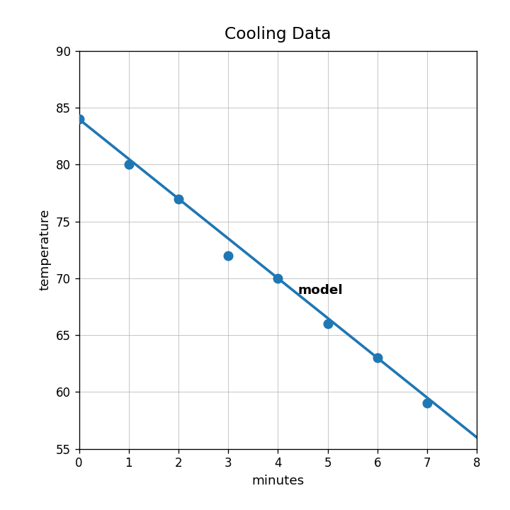
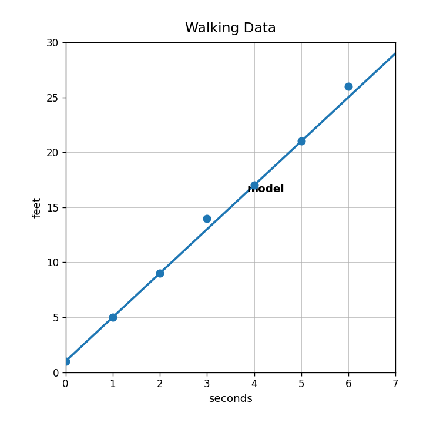
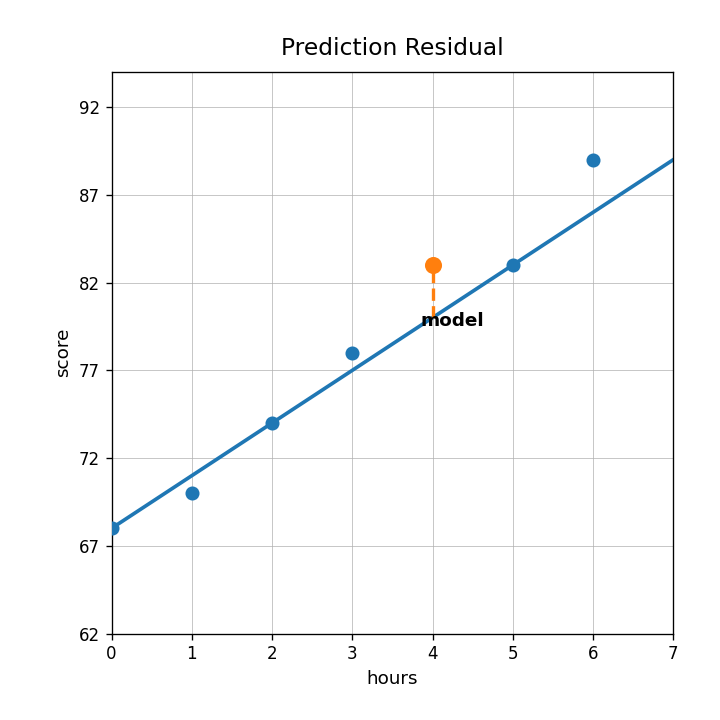
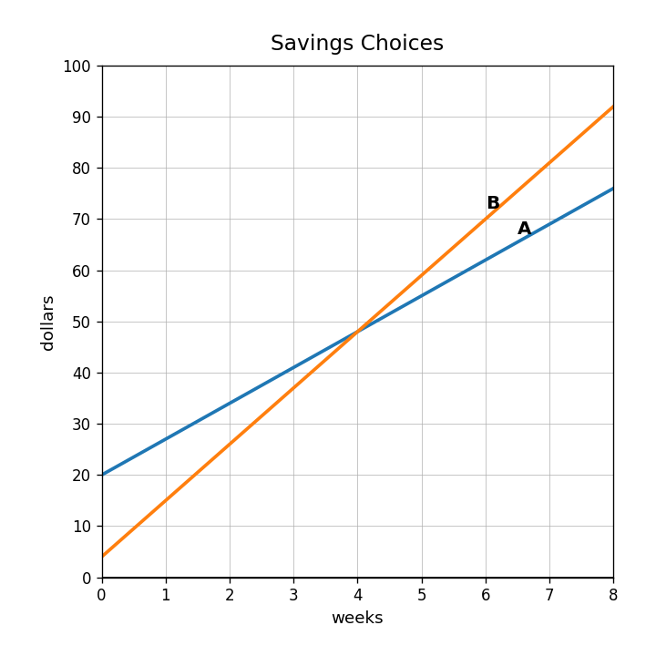
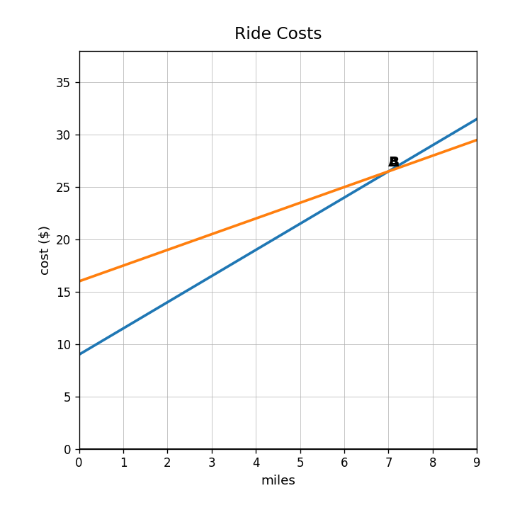

Does the cooling data show a positive association, negative association, or no clear association?

In the model $d=4t+1$, what does the 4 represent if $t$ is seconds and $d$ is feet?
Use the walking data model to predict the distance after 5 seconds. Is your answer exact or an estimate?

Use the residual graph. Is the highlighted data point above or below the model? Does it have a positive or negative residual? Explain.

Which grows faster: $A=12x+5$ or $B=9x+28$?
Which has the greater starting value: $y=15x+2$ or $y=4x+21$?
| week | 0 | 1 | 2 | 3 |
|---|---|---|---|---|
| Savings | 18 | 29 | 40 | 51 |
Find the rate of change in the table.
Use the savings graph. Which option has more money at week 0? Which grows faster?

A model is $C=6m+25$. A second company charges $40 plus $4 per mile. Compare the starting costs and rates.
Use the ride cost graph. Compare Ride A to the equation $C=2m+14$.

A table has outputs 30, 36, 42, 48 for inputs 0, 1, 2, 3. Compare it to $y=8x+20$ and explain which will be larger after many steps.
Two tutoring plans are $A=30+12h$ and $B=60+7h$. Recommend a plan for a student who needs 2 hours and for a student who needs 10 hours. Justify.
A taxi charges $5 plus $2 per mile. Which expression models the cost for $m$ miles: $5m+2$ or $2m+5$?
Is $x=6$ a solution to $5x-4=26$?
Tickets cost $7 each plus a $10 group fee. Write and solve an equation to find how many tickets cost $59.
A student solves $8x+20=100$ and gets $x=10$. Explain a real-world meaning for the 10.